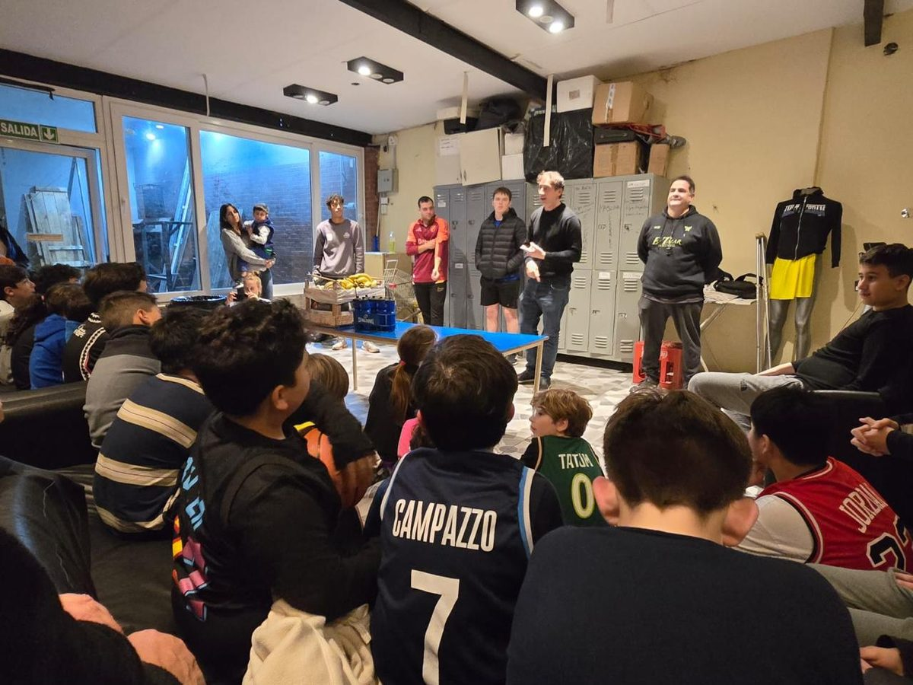
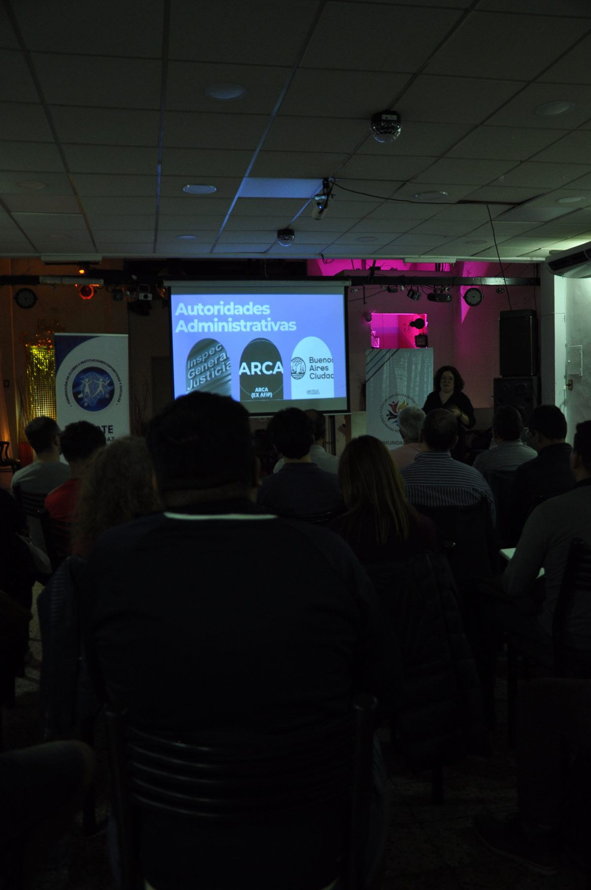
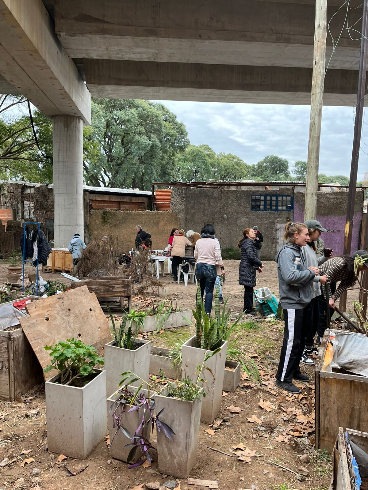
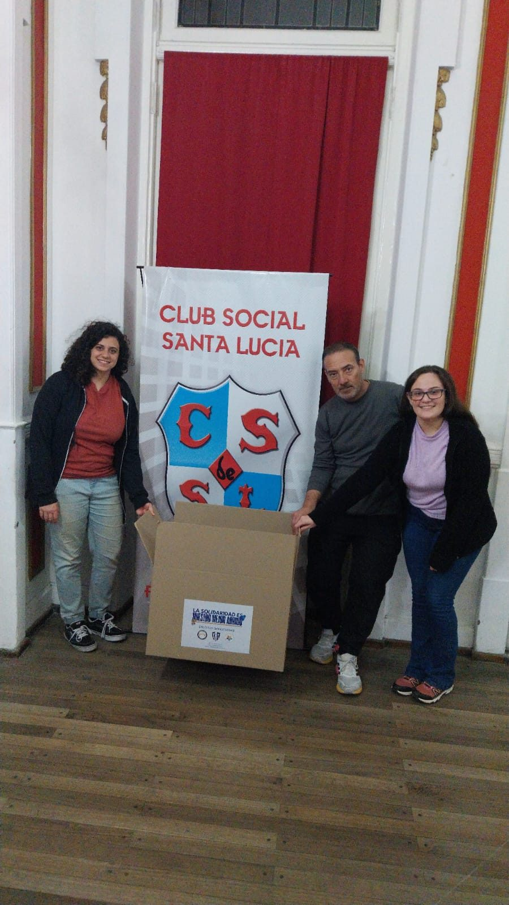
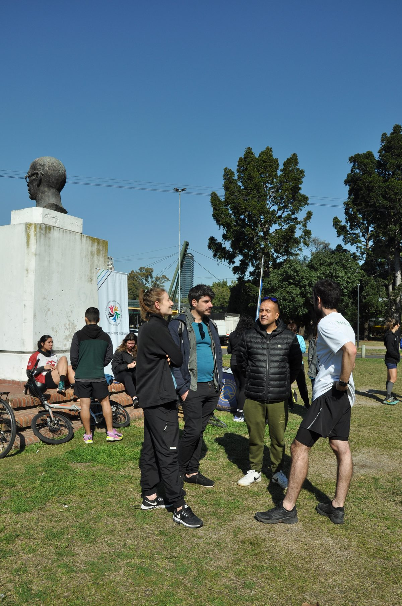

Sobre nosotros
Un espacio integrador para potenciar el deporte como herramienta social.
Reunimos clubes, federaciones, instituciones deportivas, empresas, profesionales y miembros de la comunidad para generar impacto positivo en barrios, instituciones y personas. Trabajamos desde una mirada deportiva, educativa, cultural y ambiental.
Ofrecemos una variedad de actividades y eventos tanto sociales como formativos para producir puntos de encuentro entre las comunidades.
Nuestro trabajo
Proyectos en marcha
Organizamos nuestras iniciativas en tres áreas de trabajo que articulan inclusión, formación, cuidado comunitario y participación en la Ciudad de Buenos Aires.

Deporte
Promover el movimiento, el encuentro y el acceso a prácticas deportivas como herramientas de inclusión y transformación comunitaria. Divulgar distintas prácticas deportivas en desarrollo.

Social
Generamos espacios de solidaridad, sensibilización, y promoción de la inclusión. Acompañamos instituciones y fortalecemos redes.

Salud
Promovemos hábitos saludables, cuidado integral y espacios de acompañamiento para fortalecer el bienestar de la comunidad.
Campañas
Algunas de nuestras campañas
Acciones que llevamos adelante dentro de los proyectos.

La solidaridad es nuestro mejor abrigo
Colecta de donaciones en distintas instituciones y entrega de las mismas. Una red de solidaridad.

Todo Movimiento Cuenta
Actividades abiertas para promover vida activa, nuevas disciplinas deportivas y encuentro comunitario.
Colaborá
Sumá tu institución, empresa o equipo profesional.
Trabajamos con organizaciones que quieran aportar recursos, conocimiento, espacios o tiempo para acompañar proyectos deportivos, educativos, culturales y ambientales.
Cada alianza se construye a partir de necesidades concretas y objetivos comunes, con foco en generar impacto positivo en la comunidad.
Ver formas de colaborar